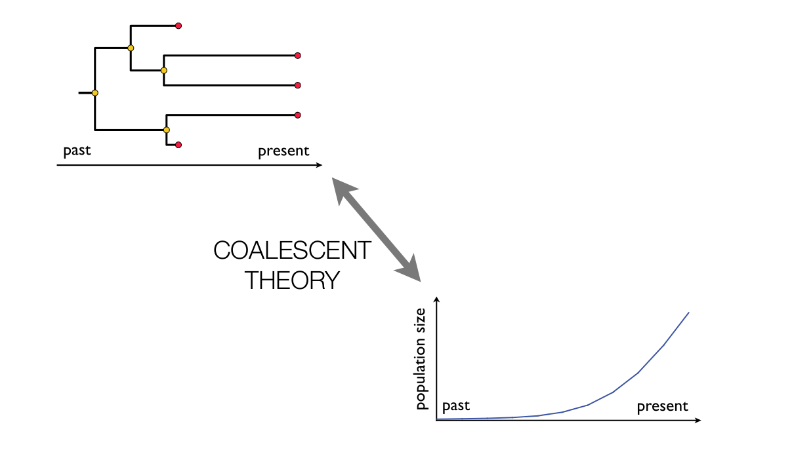
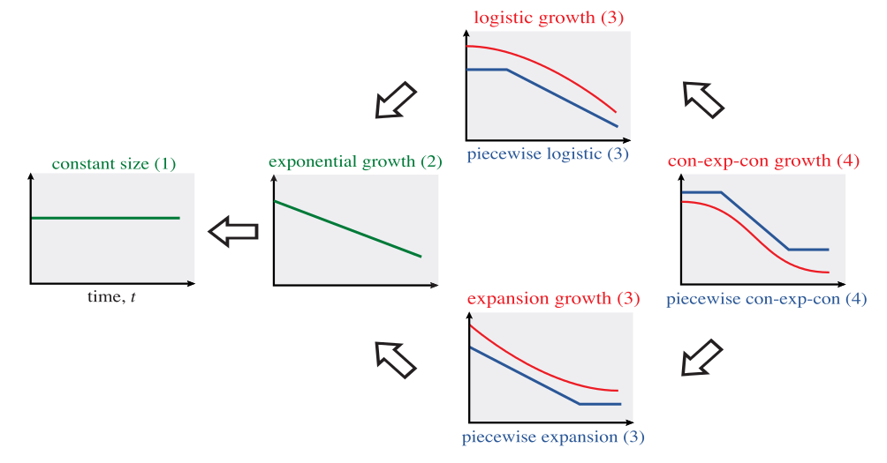
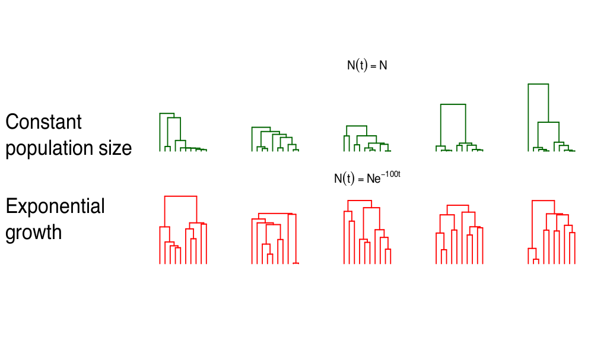
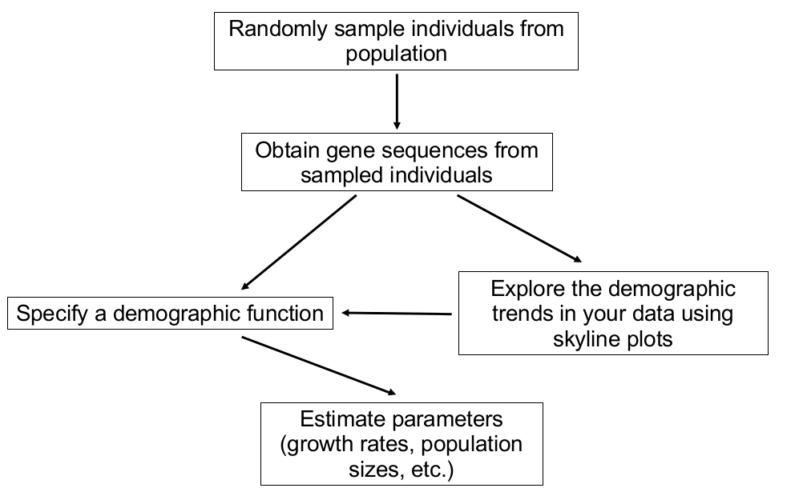
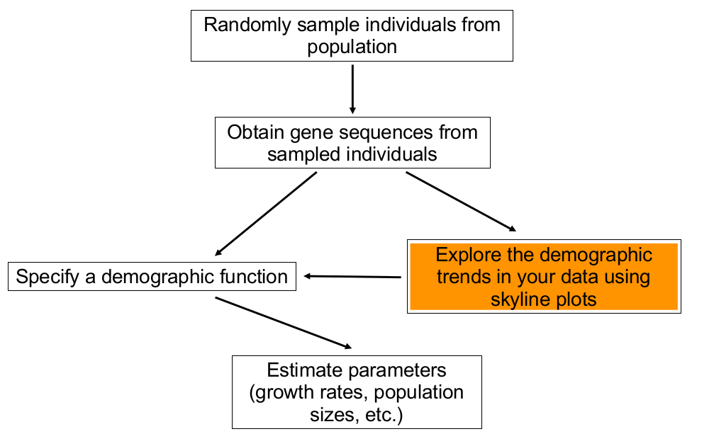
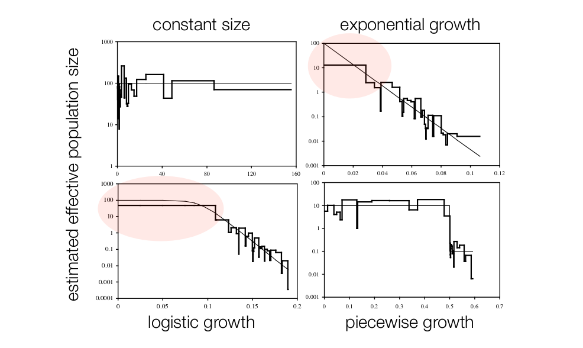

Coalescent
Short recap
Cuban Bioinformatics Workshop on
Virus Evolution and Molecular Epidemiology
Slides for the lectures availiable at:
https://github.com/fbielejec/veme2016
What is coalescent theory?

Coalescent: Model of the ancestral relationships of a small sample of individuals taken from a large population.
What is coalescent theory?
Coalescent: Describes a probability distribution for the shape and size of trees obtained by sampling genes from that population.
The Wright-Fisher model
Assumptions:
- The population size of $N$ individuals is constant through time.
- Time (generations) is discrete, i.e. every individual is replaced in every generation.
- All individuals have equal chances of reproducing.
The Wright-Fisher model
The coalescent process for $n=2$ individuals:
- Time (generations), starting from present (tips) are numbered: $t_{0},t_{1},t_{2},\ldots,t_{k}$.
- Prob. of two individuals sampled at $t_{0}$ sharing an ancestor at $t_{1}$ is $\frac{1}{N}$.
- Prob. of two individuals sampled at $t_{0}$ sharing an ancestor at $t_{2}$ is: $P(t_{2})=\underbrace{\left(1-\frac{1}{N}\right)}_{\begin{array}{c} \substack{\text{Not sharing an ancestor}\\ \text{at t1} } \end{array}}\cdot\underbrace{\frac{1}{N}}_{\begin{array}{c} \substack{\text{Sharing an ancestor}\\ \text{at t2} } \end{array}}$
- Prob. of two individuals sampled at $t_{0}$ sharing an ancestor at $t_{k}$ is: $P\left(t_{k}\right)=\left(\frac{1}{N}\right)\left(1-\frac{1}{N}\right)^{k-1}$
The Wright-Fisher model
Generalizing to $2\leq n\leq N$ sampled individuals:
-
There are $\left(\begin{array}{c}
n\\
2
\end{array}\right)=\frac{n\left(n-1\right)}{2}
$ pairs in $t_{0}$ and each has $\frac{1}{N}$ probability to coalesce in $t_{1}$:
$P\left(t_{1}\right)=\frac{n\left(n-1\right)}{2}\times\frac{1}{N}$. - Prob. of $n$ pairs sampled at $t_{0}$ sharing a common ancestor at $t_{k}$ is: $P\left(t_{k}\right)=\left(\frac{n\left(n-1\right)}{2N}\right)\left(1-\frac{n\left(n-1\right)}{2N}\right)^{k-1}.$
Kingmans coalescent
- $n$ pairs sampled at $t_{0}$ share a common ancestor at $t_{k}$: $P\left(t_{k}\right)=\left(\frac{n\left(n-1\right)}{2N}\right)\left(1-\frac{n\left(n-1\right)}{2N}\right)^{k-1}$
- This is a PMF of a geometric distribution with parameter $p=\frac{n\left(n-1\right)}{2N}$
- Geometric distribution returns the probability that the $k$-th trial out of $k$ independent Bernoulli trials, each with success probability $p$, is a successful one: $P\left(X=k\right)=p\left(1-p\right)^{k-1},\;0< p\leq1,\; k\in\left\{ 1,2,3,\ldots\right\}$
Kingmans coalescent
- For small values of $p$ geometric distribution can be approximated by its continuous equivalent, the exponential distribution.
- We can now move into continuous time: $f\left(t\right)=\frac{n\left(n-1\right)}{2N}\textrm{exp}\left(-\frac{n\left(n-1\right)}{2N}t\right)$
- The rate of coalescence at time $t$ is $\frac{n\left(n-1\right)}{2N}$
Kingmans coalescent
$f\left(t\right)=\frac{n\left(n-1\right)}{2N}\textrm{exp}\left(-\frac{n\left(n-1\right)}{2N}t\right)$
- Kingman's coalescent is a continuous time version of the Wright-Fisher model with $n$ sampled individuals.
- In real populations $N$ changes over time: $\frac{n\left(n-1\right)}{2N\left(t\right)}$
- $N(t)$ is the demographic function and is what we want to infer.
Commonly used demographic functions

- Arrows show when one function is a special case of another.
- Number of parameters for each model is shown in parentheses.
Commonly used demographic functions

Effective population size
- In reality we cannot estimate $N$ because real populations differ from the simple Wright-Fisher model.
- Instead we estimate $N_{e}$ the effective population size.
- $N_{e}$ can be though of as the "genetic" size of the population and usually $N_{e}\ll N$.
- If selection is weak then $N_{e}\approx N$.
- If selection is strong then $N_{e}$ is not proportional to $N$ and is best interpreted as a measure of relative genetic diversity.
Coalescent inference
Coalescent inference
Skyline plots
- Tools used to explore which demographic function best suits the demographic history of sampled sequences.
- Provide a plot of estimated effective population sizes $N_{e}$ through time.
- Classic skyline plot.
- Bayesian skyline plot (phylogenetic uncertainty).
- Bayesian skyride plot (uses a more flexible statistical model).
Classic skyline plot [Pybus et al., 2000]
- Piecewise constant model.
- Estimated effective pop. size during each interval:
$\hat{N_{k}}=\frac{k\left(k-1\right)}{2}t_{k}$ - $\hat{N_{k}}$ estimates the harmonic mean of the demographic function $N(t)$ during each interval.
Classic skyline plot [Pybus et al., 2000]
Bayesian skyline plot [Drummond et al., 2005]

- The classic plot conditions on a fixed input tree, which is assumed to be correct.
- Bayesian skyline (and skygrid) averages aver all plausible trees, making estimates of uncertainty readily availiable.
- Provides estimates of $ N_{e}\tau$ plus HPD confidence interval.
- $\tau$ is a mutation rate parameter (scales the tree from units of mutations per site to units of time).
Bayesian skyride plot [Minin et al., 2008]
- Skyline models assume that $N_{e}\tau$ can change their value at the end of each interval.
- Skyride model assumes that $N_{e}\tau$ changes continuously through time.
- Change in $N_{e}\tau$ are modelled using a Gaussian Markov random field (GMRF) model.